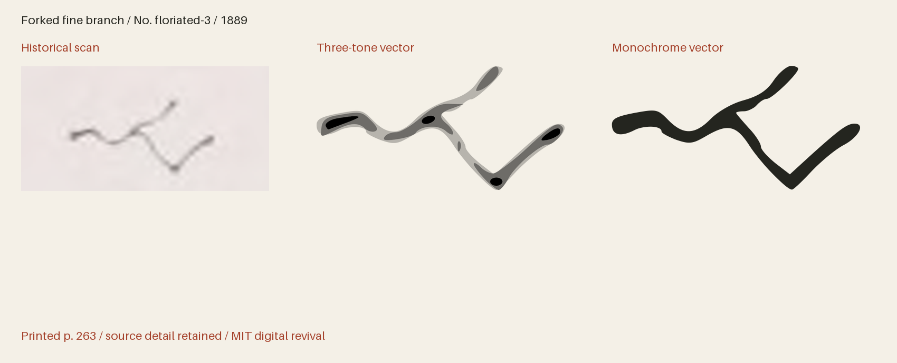

Forked fine branch


Use this icon in HTML
Download the web bundle (ZIP), unzip it, then place the extracted collection folder beside your HTML file. Keep its subfolders together. The examples below will then work as written; adjust the paths if you put the folder elsewhere. The bundle includes the SVGs, PNGs, fonts, CSS, instructions and license.
Three-tone image
This displays all three tones with a transparent background. Set the height; the width follows the original proportions.
<img src="collection/boston-ornaments-1889/svg/multitone/boston-1889-p263-floriated-3.svg"
alt="Forked fine branch" height="96">An image has its own colour context, so page CSS cannot recolour its internal regions. For a decorative image beside a text label, use alt="".
Three-tone with your own colours
On an HTTP(S) page, load the sprite from the same site. This complete example uses dark primary ink and two strengths of red. Each region has an independent colour and opacity; set the secondary and tertiary values alike for a two-tone appearance.
<style>
.revival-cut {
display: inline-block;
font-size: 96px;
height: 1em;
width: 0.941406em;
vertical-align: middle;
--fr-primary-color: #24251f;
--fr-secondary-color: #a5422c;
--fr-tertiary-color: #a5422c;
--fr-primary-opacity: 1;
--fr-secondary-opacity: 0.55;
--fr-tertiary-opacity: 0.25;
}
</style>
<svg class="revival-cut" role="img" aria-label="Forked fine branch">
<use href="collection/boston-ornaments-1889/web/icons-multitone.svg#boston-1889-p263-floriated-3"></use>
</svg>Monochrome icon font
Copy the whole web/ folder, including CSS and webfonts. Font size and colour use ordinary CSS. The icon font draws the solid version; use SVG for three-tone artwork.
<link rel="stylesheet" href="collection/boston-ornaments-1889/web/icons.css">
<span class="fr-icon fr-boston-1889-p263-floriated-3" aria-hidden="true"
style="font-size:96px;color:#a5422c"></span>
<span>Forked fine branch</span>The decorative font icon is hidden from screen readers and has a visible text label. An icon conveying meaning on its own needs role="img" and an aria-label instead of aria-hidden.
Compare with the historical impression
